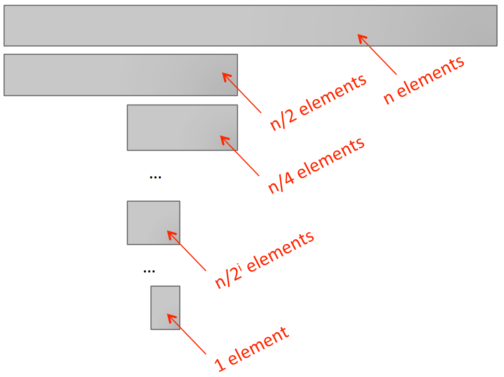

Goals:
Complexity classes in increasing order:
| Class | n=10 | n=100 | n=1000 | n=1000000 |
| O(1) | 1 | 1 | 1 | 1 |
| O(log n) | 1 | 2 | 3 | 6 |
| O(n) | 10 | 100 | 1000 | 1000000 |
| O(n log(n)) | 10 | 200 | 3000 | 6000000 |
| O(n^2) | 100 | 10000 | 1000000 | 1000000000000 |
| O(2^n) | 1024 | 1.2*10^31 | 1.07*10^311 | forget it! |
Constant complexity class
Logarithmic complexity class
Searching in a list
def search(L, e):
for i in range(len(L)):
if L[i] == e:
return True
if L[i] > e:
return False
return False
This method is called a sequential search.
Binary search
e in list LL[i] == eL[i] is larger or smaller than eL for e.Binary search complexity analysis

log n.O(log n) where n is len(L).Binary search implementation 1
def binsearch1(L, e):
if L == []: # this check and return is constant-time-complexity, or O(1)
return False
elif len(L) == 1: # this check is also O(1)
return L[0] == e # this check is also O(1)
else:
half = len(L)//2 # constant O(1)
if L[half] > e: # Is L[half] O(1)? Let's assume for now it is.
return binsearch1(L[:half], e) # involves copying the list, not constant
else:
return binsearch1(L[half:], e) # involves copying the list, not constant
Complexity of binsearch1:
O(log n) calls to binsearch1
n, in worst case in case of range of size 1 when n/2k=1, or k=log nO(n) for each binsearch1 call to copy list:
O(log n)*O(n) indicates that the complexity can be as high as O(n log n).O(n/2i). Thus, the total cost of copying is n + n/2 + n/22 + ... + 1, which is equal to 2n.A better implementation of binary search
n=len(L).
def binsearch_helper(L, e, low, high):
if high == low:
return L[low] == e
mid = (low + high)//2
if L[mid] == e:
return True
elif L[mid] > e:
if low == mid: #nothing left to search
return False
else:
return binsearch_helper(L, e, low, mid - 1) #constant to set up the call. The actual call takes longer
else:
return binsearch_helper(L, e, mid + 1, high) #constant to set up the call. The actual call takes longer
def binsearch(L, e):
if len(L) == 0:
return False
else:
return binsearch_helper(L, e, 0, len(L) - 1) #constant to set up the call. The actual call takes longer
Complexity of binsearch:
O(log n) calls to binsearch_helper
n, in worst case in case of range of size 1 when n/2k=1, or k=log nO(1) for each binsearch_helper execution (including the cost to set up the call)O(log n)*O(1) indicates that the complexity is O(log n).Another example of logarithmic complexity: int2str
def int2str(n):
digits = '0123456789'
if n == 0:
return '0'
result = ''
i = n
while i > 0:
result = digits[i%10] + result
i = i//10
# can you place an assertion here?
return result
What is the correctness argument? What assertion can you put at the end of the body of the while loop? Ans: assert(10**(len(result))*i+int(result)==n). This is an invariant.
Analyzing the complexity of the program above:
n by 10 such that it remains greater than 0?O(log(n))Linear complexity
Analyzing the complexity of an iterative implementation of the factorial function
def fact_iter(n):
prod = 1
for i in range(1, n+1):
prod *= i
return prod
O(n). n times around loop, constant time each time.Analyzing the complexity of a recursive implementation of the factorial function
def fact_rec(n):
""" assume n >= 0 """
if n <= 0:
return 1
else:
return n*fact_rec(n-1)
O(n) because the number of function calls is linear in n, and constant effort to set up call.Log-linear O(n log n) complexity
Polynomial complexity
isSubset function:
def isSubset(L1, L2):
for e1 in L1:
matched = False
for e2 in L2:
if e1 == e2:
matched = True
break
if not matched:
return False
return True
Exponential complexity
Complexity of Towers of Hanoi
tn denote time to solve tower of size n.tn = 2tn-1 + 1 = 2(2tn-2 + 1) + 1 = 4tn-2+ 2 + 14tn-2+ 2 + 1 = 4(2tn-3+1)+2 + 1 = 8tn-3 + 4 + 2 + 1k expansions: 2ktn-k+2k-1 + 2k-2 + ... + 4 + 2 + 1n-k=1: 2n-1 + 2n-2 + 2n-3 + ... + 4 + 2 + 12n-1.2n.Exponential complexity example: Power set
1